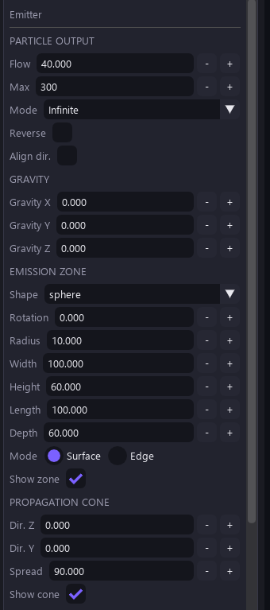
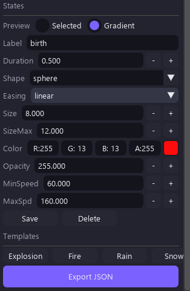
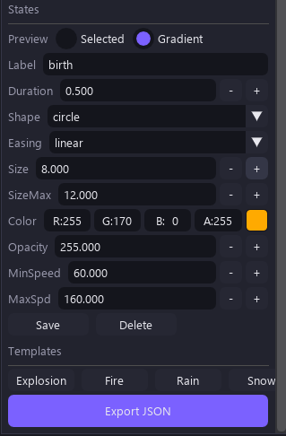
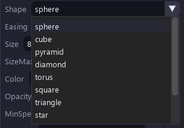
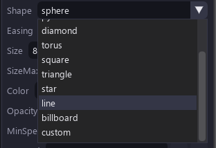
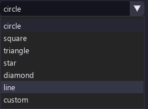
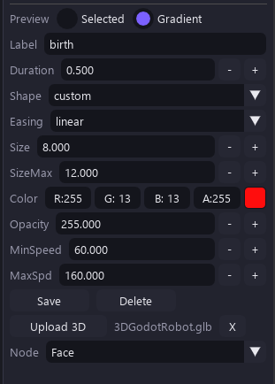

Editor Tour
The window is split into four areas: a top toolbar, the settings sidebar on the left, the live viewport in the middle, and the states/status bar underneath.
Top toolbar
| Control | What it does |
|---|---|
| Lempo menu | App menu (presets, settings, about) |
| Effect name (Default) | Current effect / preset |
| 2D / 3D toggle | Switch renderer (a purple dot marks the active one) |
| FOV − / + | 3D field of view |
| Sens − / + | Navigation sensitivity |
| New / Save / Save As / Open | Effect files use the OS-native file dialog |
Sidebar — Emitter panel
The emitter panel is the heart of the effect. Sections top to bottom:

| Section | Key settings |
|---|---|
| Particle output | Flow (particles/sec) · Max cap · Mode
(Infinite / Burst) · Reverse · Align dir. ·
Blend mode · Seed |
| Force fields v1.2 | Turbulence (amount/scale/speed) · Y-axis vortex · attractor (strength/radius/X/Y) · collision plane (Y, bounce, friction) — all off by default |
| Gravity | Gravity X / Y (world pull on every particle) |
| Emission zone | Spawn shape (Circle / Rect …), rotation, radius, width, height |
seed makes replay
deterministic within each runtime. Python and C++ parity is tested; the browser preview and
GDevelop extension have separate spawn implementations, so the same seed does not guarantee
identical particle records between them. 0 keeps legacy unseeded behavior.States & templates
Under the viewport sits the STATES bar: birth and death chips (plus + to add more). Each state keeps its own color — white means the natural material, any other color tints over the base. Colors cross-fade between states over the particle's life.


The sidebar also carries the templates list — ready-made effects (Explosion, Fire, Rain, Snow in 2D + 3D variants) — and the shape picker:



Shapes & custom assets
12 particle shapes are shared by the 2D and 3D renderers: circle, square, triangle, star, diamond, line, custom, sphere, cube, pyramid, torus, billboard.

- Custom 3D models & images — upload
.glb/.gltf/.obj(or images for 2D). Models render as themselves in the viewport, the browser preview, and in-game. Rigged/skinned GLBs are baked to their rest pose automatically. - Gradual shape morph — birth-to-death shapes cross-fade inside the
(0.25, 0.75)window instead of snapping (desktop viewport + browser preview; the game runtime keeps the classic swap for meshes).
Force fields in practice
| Field | Behavior |
|---|---|
| Turbulence | Age-phased noise — subtle drift early, chaos late (or the reverse) |
| Vortex | Swirl around the Y axis |
| Attractor | Pull toward a point with linear falloff over the radius |
| Collision plane | Bounce + friction at a world Y height |
All fields are off by default, so legacy motion stays bit-identical when you don't touch them.
Viewport navigation
| Mode | Controls (shown at the bottom of the viewport) |
|---|---|
| 2D (GDevelop-style) | WASD/arrows move · wheel zooms at cursor · Space+drag pans · F focus · left-drag gizmo |
| 3D (Blender-style) | A/D orbit · W/S dolly · Q/E up-down · MMB orbit · wheel dolly · 1/3/7 views · F focus |
Status area
- Particle count & FPS (top-right of the viewport) — e.g.
Particles: 20 · FPS: 240 C++shows the compiled core in use. - STATES chips + Fast preview 60FPS button + a status message (Ready / OK — ready).
- Perf HUD — trails mode shows
trails: N · verts · draws · sim · renderstats.